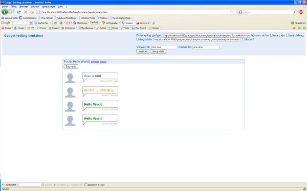
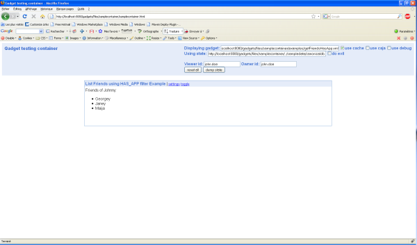

So, you correctly downloaded and installed Apache Shindig, what's next?
The sample container should be your first starting point:
http://localhost:8080/gadgets/files/samplecontainer/samplecontainer.html
The page displayed in the figure bellow is the Apache Shindig sample container. Its goal is to help you to deploy and test your applications. You could also change the application state: changing the number and kind of friends, application data, or changing the viewer (i.e. the user accessing the application).
By default, the gadget is http://localhost:8080/gadgets/files/samplecontainer/examples/SocialHelloWorld.xml. You could try to use another gadget by specifying one of following URLs in the "Displaying gadget" field and click on "reset all":
By default, all the datas are in the http://localhost:8080/gadgets/files/samplecontainer/../sampledata/canonicaldb.json. You could try to use another state by specifying one of following URLs in the "Using state" field and click on "reset all":
You could also discover other samples on http://localhost:8080:
This part is mainly to play with OpenSocial APIs.
Apache Shindig implements the OpenSocial Restful Protocol based on AtomPub. It supports XML and JSON formats in addition to Atom format XML. The following REST samples will focus on the Read only operation (GET). All sample data are located in http://localhost:8080/gadgets/files/sampledata/canonicaldb.json.
{"entry":[{"id":"jane.doe","name":{"formatted":"Jane Doe","givenName":"Jane","familyName":"Doe"}},
{"id":"george.doe","name":{"formatted":"George Doe","givenName":"George","familyName":"Doe"}},
{"id":"maija.m","name":{"formatted":"Maija Meikäläinen","givenName":"Maija","familyName":"Meikäläinen"}}],"totalResults":3,"startIndex":0}{"entry":{"id":"john.doe","name":{"formatted":"John Doe","givenName":"John","familyName":"Doe"}}}{"entry":[{"id":"john.doe","name":{"formatted":"John Doe","givenName":"John","familyName":"Doe"}}],"totalResults":1,"startIndex":0}{"entry":[{"title":"yellow","userId":"john.doe","id":"1","body":"what a color!"}],"totalResults":1,"startIndex":0}{"entry":[{"title":"yellow","userId":"john.doe","id":"1","body":"what a color!"}],"totalResults":1,"startIndex":0}For more information on the URI templates, please read OpenSocial REST section in the overview page.
Apache Shindig also implements OpenSocial RPC Protocol. The following RPC samples are similar to the REST samples.
{"data":{"id":"john.doe","name":{"formatted":"John Doe","givenName":"John","familyName":"Doe"}}}{"data":{"list":[{"id":"jane.doe","name":{"formatted":"Jane Doe","givenName":"Jane","familyName":"Doe"}},
{"id":"george.doe","name":{"formatted":"George Doe","givenName":"George","familyName":"Doe"}},
{"id":"maija.m","name":{"formatted":"Maija Meikäläinen","givenName":"Maija","familyName":"Meikäläinen"}}],"totalResults":3,"startIndex":0}}For more information on the URI templates, please read OpenSocial JSON-RPC section in the overview page.
You are now ready to create your first OpenSocial application!
Apache Shindig implements Gadgets Specification. Gadgets are web-based software components based on HTML, CSS, and JavaScript. Please read Getting Started: gadgets.* API to learn more.
Typically, an Opensocial gadget is similar to a Google Gadget since its should respect the Google Gadgets specifications. Here is a small snippet:
<?xml version="1.0" encoding="UTF-8"?>
<Module>
<ModulePrefs title="A Title">
<Require feature="opensocial-0.8"/>
...
</ModulePrefs>
<Content type="html">
<![CDATA[
<script type="text/javascript">
...
gadgets.util.registerOnLoadHandler(init);
</script>
<div id="id"/>
...
]]>
</Content>
</Module>This XML file describes the OpenSocial application.
To access data from the Apache Shindig, you have to create a DataRequest object using the opensocial.newDataRequest() call.
Your first application will enumerate the friends currently belonging to the network of the user accessing the application. The following snippet is the code of http://localhost:8080/gadgets/files/samplecontainer/examples/getFriendsHasApp.xml.
<?xml version="1.0" encoding="UTF-8"?>
<Module>
<ModulePrefs title="List Friends using HAS_APP filter Example">
<Require feature="opensocial-0.7"/>
</ModulePrefs>
<Content type="html">
<![CDATA[
<script type="text/javascript">
/**
* Request for friend information.
*/
function getData() {
var req = opensocial.newDataRequest();
req.add(req.newFetchPersonRequest(opensocial.DataRequest.PersonId.OWNER), 'owner');
var params = {};
params[opensocial.DataRequest.PeopleRequestFields.MAX] = 50;
params[opensocial.DataRequest.PeopleRequestFields.FILTER] = opensocial.DataRequest.FilterType.HAS_APP;
params[opensocial.DataRequest.PeopleRequestFields.SORT_ORDER] = opensocial.DataRequest.SortOrder.NAME;
req.add(req.newFetchPeopleRequest(opensocial.DataRequest.Group.OWNER_FRIENDS, params), 'ownerFriends');
req.send(onLoadFriends);
};
/**
* Parses the response to the friend information request and generates
* html to list the friends along with their display name.
*
* @param {Object} dataResponse Friend information that was requested.
*/
function onLoadFriends(dataResponse) {
var owner = dataResponse.get('owner').getData();
var html = 'Friends of ' + owner.getDisplayName();
html += ':<br><ul>';
var ownerFriends = dataResponse.get('ownerFriends').getData();
ownerFriends.each(function(person) {
html += '<li>' + person.getDisplayName() + '</li>';
});
html += '</ul>';
document.getElementById('message').innerHTML = html;
};
gadgets.util.registerOnLoadHandler(getData);
</script>
<div id="message"> </div>
]]>
</Content>
</Module>The following is the result of http://localhost:8080/gadgets/files/samplecontainer/examples/getFriendsHasApp.xml in the sample container http://localhost:8080/gadgets/files/samplecontainer/samplecontainer.html:
This is your first overview of the APIs that deals with people and relationships.
To go further, you could also try the opensocialdevapp http://osda.appspot.com/gadget/osda-0.8.xml, for instance:
http://localhost:8080/gadgets/ifr?url=http://osda.appspot.com/gadget/osda-0.8.xml&view=canvas
Apache Shindig implements Opensocial Specification.
Typically, you need to implement some classes: PersonService, AppDataService, ActivityService, MessagesService, AlbumService, GroupService, MediaItemService.
In Java, theses classes are located in the org.apache.shindig.social.opensocial.spi package. Apache Shindig proposes a sample JPA implementation. Read Samples for Java for more information.
In PHP, theses classes are located in the social/opensocial/spi dir.